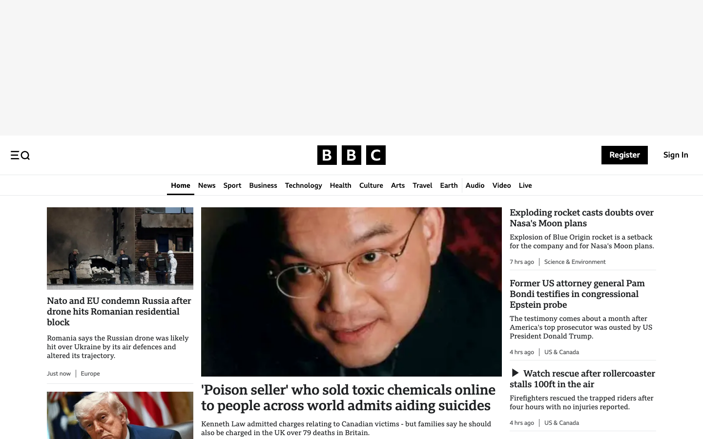
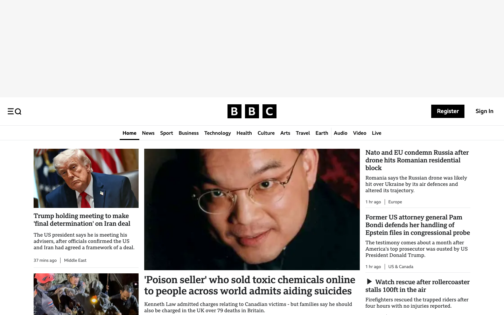

BBC


- URL
- https://www.bbc.com
- Review reason
- no banner observed in access probe or weekly capture; inspect saved screenshots/DOM to verify CMP presence, region behavior, or sample fit
- Recommended action
- manual screenshot/DOM review; rerun with fresh browser context if a CMP is expected
- Decision options
keep_consent_sample|keep_no_banner_case|rerun_fresh_context|replace_candidate|exclude- Capture DOM
- data/captures/sites/www_bbc_com_20260529_184907/layer1.html
- DOM hash
8c500d41befe2c1132b7bb9a01a2afd1dca8e95774e18546b1b5e07d6c97c04d- Image hash
ffffffdf0383c31f:665b1399daa86f20